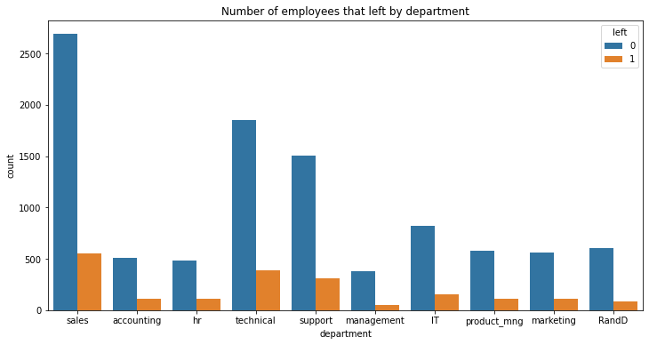
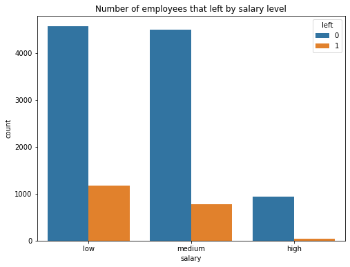
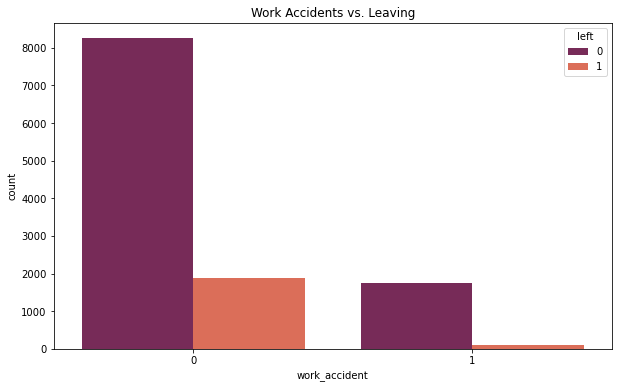
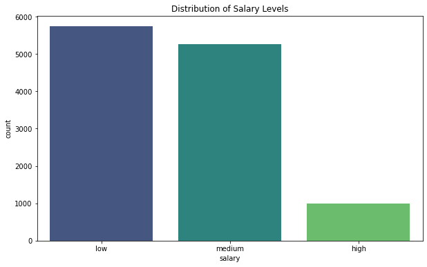

Hi, I'm Tobin Zolkowski. Welcome! This project explores a challenge many companies face: keeping talented employees happy and engaged. At Salifort Motors, we noticed more people were leaving than we'd like. Losing good people isn't just about hiring costs; it affects team spirit and slows down progress.
So, we put on our detective hats! Using data about our employees, we looked for patterns to understand why people stay and why they might leave. Think of it as using clues hidden in numbers to build a better, more supportive workplace.
Our goal? To use these insights to help Salifort Motors become an even better place to work, reducing turnover and boosting overall success.
Finding Clues: Listening to the Data
We started by looking at information from 15,000 employees, focusing on 10 key areas like:
Happiness Level: How satisfied were they?
Performance Score: How did they do in reviews?
Project Load: How many projects were they working on?
Work Hours: How many hours did they typically work?
Time with Company: How many years had they been at Salifort?
Workplace Safety: Any accidents reported?
Left Company?: Did they stay or leave? (This is what we wanted to understand!)
Recent Promotion?: Were they promoted recently?
Team: Which department did they belong to?
Pay Level: Were they paid low, medium, or high compared to others?
Before digging for clues, we tidied up the data. This meant making sure everything was consistent and translating things like 'Department' and 'Pay Level' into a format our analysis tools could easily understand.
Visual Clues: What the Charts Told Us
Pictures often tell a story better than just numbers. Here are some key discoveries:
Chart 1: How Long People Stay
Most employees stay around 3 years.
This chart shows that 3 years is a common length of time for employees at Salifort. Many leave between their 2nd and 4th year. This tells us the 3-year mark is a critical time to focus on keeping people happy.
Chart 2: Connecting the Dots
Shows links between different factors. Unhappiness is strongly linked to leaving.
This "heatmap" shows connections. The most important clue? Unhappiness is strongly linked to leaving. We also saw that people working on more projects often had higher performance scores and worked more hours – suggesting our high performers might be carrying a heavy load.

Chart 3: Leaving by Team
Sales, Technical, and Support teams saw the most departures.
Looking at different teams, we saw the Sales, Technical, and Support departments had the highest number of people leaving. While these are large teams, it suggests we might need to look closer at the specific challenges within these groups.

Chart 4: Does Pay Matter?
Yes! Lower pay is linked to higher chances of leaving.
This chart is clear: employees earning lower salaries were much more likely to leave than those earning medium or high salaries. Pay is definitely a big factor.

Chart 5: How Pay is Spread Out
Most employees are in the low or medium pay bands.
Adding to the story, this chart shows that most Salifort employees are in the low and medium pay groups. This helps explain why pay seems to be a major reason for people leaving.
Chart 6: Employee Happiness Levels
Shows two main groups: very unhappy and quite happy.
Employee happiness isn't straightforward. We saw two main groups: one group very unhappy, and another group quite satisfied. This split suggests we need different approaches for different employees.
Chart 7: Performance Review Scores
Scores often cluster around average and high marks.
Performance scores also showed patterns, with many employees scoring around the middle or towards the higher end. How people feel about their performance reviews could be linked to their happiness and workload.
Chart 8: How Many Projects?
Most people handle 3-4 projects.
Most employees juggle 3 or 4 projects at once. Some have fewer, some have many more (up to 7!). Finding the right balance is key – too few projects might lead to boredom, while too many can cause burnout.
Chart 9: Working Hours
Shows two groups: one working standard hours, another working very long hours.
Working hours varied. We saw one group working typical hours (around 150/month) and another working significantly more (220-270/month). Long hours could be a sign of burnout risk.
Chart 10: Years at Salifort (Another Look)
Confirms the 3-year mark is key, with fewer staying past 5 years.
This chart confirms what we saw earlier: the highest number of employees have been here for 3 years. Fewer employees stay beyond the 5-year mark, highlighting a challenge in long-term retention.
Chart 11: Promotions Keep People!
Employees who get promoted rarely leave.
This is a powerful clue: getting promoted makes a huge difference. Very few employees who received a promotion in the last 5 years left the company. This shows how important growth opportunities are.

Chart 12: Workplace Accidents & Staying
Surprisingly, those with accidents were less likely to leave.
Here's a surprise: employees who had a work accident were actually less likely to leave. While safety is always crucial, this suggests accidents themselves aren't driving people away – perhaps other support systems kick in.
Making Predictions: Building a Crystal Ball
Finding clues was the first step. Next, we wanted to build a tool – like a data crystal ball – that could help predict which employees might be unhappy or thinking about leaving before it happens. We tested a few different approaches.
Testing Our Crystal Balls
We used three methods to see which could predict employee departures most accurately:
Method 1: Simple Logic (Logistic Regression)
Accuracy (Overall Correctness): ~78%
Precision (Correctly ID'ing Leavers): ~73%
Recall (Finding Most Leavers): ~69%
F1-Score (Balanced Score): ~71%
Result: A decent start, but it missed identifying many of the employees who actually left.
Method 2: Teamwork Trees (Random Forest)
Accuracy: 97.83%
Precision: 98%
Recall: 89%
F1-Score: 93%
Result: Much better! Very accurate and good at finding most of the employees who left.
Method 3: Smart Boosting (XGBoost)
Accuracy: 97.96%
Precision: 98%
Recall: 90%
F1-Score: 94%
Result: The best performer! Extremely accurate and slightly better at identifying employees likely to leave.
Chart 13: How Well the Crystal Balls Work
Higher lines mean better predictions. Methods 2 & 3 are excellent.
This chart confirms that Methods 2 and 3 (the green and orange lines) were far superior at distinguishing between employees who stayed and those who left compared to Method 1 (blue line) or just guessing (dotted line). Both achieved a score (AUC) of 0.98, which is excellent.
What Clues Did the Best Crystal Ball Use?
Knowing *which* clues our best prediction methods relied on helps us focus our efforts. Here's what mattered most:
Happiness Level: Consistently a top factor. Unhappy employees are a major risk.
Time with Company: The 3-5 year mark is a critical period.
Number of Projects: Workload balance is crucial.
Average Work Hours: Long hours signal potential burnout.
Performance Score: How employees feel about their performance matters.
Note: Both top methods pointed to similar clues, giving us confidence in these findings.
Chart 14: Top Clues (Method 2: Teamwork Trees)
Happiness level was the #1 clue for this method.
Chart 14 shows that Method 2 relied most heavily on happiness level, followed by time with the company, project count, performance score, and work hours.
Chart 15: Top Clues (Method 3: Smart Boosting)
Project count and happiness were top clues here.
Chart 15 shows our best method (Method 3) also valued these clues highly, ranking project count and happiness level as extremely important, along with time at company, work hours, and performance score.
Our Champion Predictor
While the simple logic method was okay, the more advanced "Teamwork Trees" and "Smart Boosting" methods were far better. Because "Smart Boosting" (XGBoost) was slightly more accurate and effective, we chose it as our champion crystal ball to help Salifort identify employees who might need support.
Solutions: Building a Happier Workplace
By combining the clues from our data exploration with the insights from our predictive crystal ball (XGBoost), we can suggest practical steps for Salifort Motors:
What We Learned (The Key Takeaways):
Happiness is King: Low satisfaction is the biggest warning sign.
The 3-5 Year Itch: This period is crucial for retention.
Workload Balance Matters: Too many projects (burnout) or too few (boredom) can be problems.
Long Hours = Risk: High monthly hours often lead to departures.
Performance & Growth: Feeling undervalued or stuck impacts decisions.
Promotions Retain: Lack of advancement opportunities is a major factor.
Fair Pay is Essential: Especially for those in lower pay bands.
Recommendations for Salifort Motors:
Tune In to Happiness: Regularly check in on employee satisfaction (e.g., quick surveys). Address concerns about pay, workload, and recognition quickly.
Balance the Load: Ensure projects are distributed fairly. Watch out for signs of burnout (too many hours/projects) and disengagement (too few).
Invest in Mid-Career Growth: Create clear paths for advancement, especially for employees nearing the 3-5 year mark. Offer training or mentoring.
Make Reviews Meaningful: Ensure performance reviews are fair, constructive, and linked to growth opportunities.
Recognize & Reward: Celebrate achievements regularly. Make promotion paths clear and review pay scales to ensure competitiveness, particularly for lower-paid roles.
Next Steps: Keep Improving!
Talk to employees (especially those leaving) to understand the 'why' behind the data.
Try out targeted support programs for employees flagged by our crystal ball as high-risk.
Keep the crystal ball updated with new data so it stays accurate over time.
About This Project
This project aimed to turn employee data into actionable steps for Salifort Motors' HR team. It blends data analysis techniques with practical business thinking. If you're curious about the technical details, you can find the Python code and full analysis here.
Note: This project was completed as part of the Google Advanced Data Analytics Capstone course on Coursera, using a dataset provided by the course.